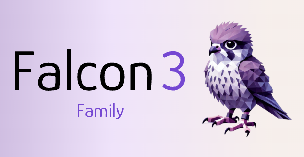
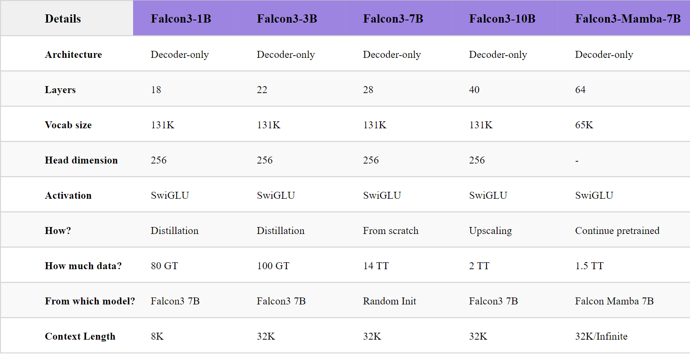

Summary
Falcon 3 is a family of five open-source language models from 1B to 10B parameters, plus a Mamba-based 7B variant, released in December 2024. The family sets a new bar for open-source LLMs under 13B, with particular emphasis on science, mathematics, and code capabilities alongside strong general-purpose performance.
The release is defined by three distinct training approaches applied strategically by model size: a full large-scale pretraining run for the 7B anchor model (14 trillion tokens on 1024 H100 GPUs); a novel depth up-scaling procedure that grows the 7B to a 10B state-of-the-art model by duplicating and continued-pretraining redundant layers; and knowledge distillation combined with pruning to produce highly efficient 1B and 3B models from less than 100 giga-tokens of curated data. Each technique is chosen to maximize quality per compute dollar at its target scale.
All Transformer-based models use a Llama-compatible architecture with SwiGLU activations and a 131K-token vocabulary, making them a drop-in for the existing open-source tooling ecosystem. Context lengths range from 8K (1B) to 32K (3B, 7B, 10B, Mamba).
Model Variants
- Falcon3-1B — 8K context. Developed via pruning and distillation; surpasses SmolLM2-1.7B and matches Gemma-2-2B.
- Falcon3-3B — 32K context. Knowledge-distilled; outperforms Llama-3.1-8B and Minitron-4B-Base despite its smaller size.
- Falcon3-7B — 32K context. The anchor model trained from scratch on 14T tokens; competitive with Qwen2.5-7B across reasoning, math, and knowledge benchmarks.
- Falcon3-10B — 32K context. Depth up-scaled from 7B, then continued-pretrained on 2T tokens of high-quality data; state-of-the-art for models under 13B.
- Falcon3-Mamba-7B — 32K context. A pure State Space Model enhanced with 1.5T additional tokens; the top-performing open SSM at its scale, matching Transformer 7B models.
All models are released in Base, Instruct, GGUF, GPTQ-Int4, GPTQ-Int8, and AWQ variants (1B/3B also available in 1.58-bit).

Key Contributions
Training — 7B Anchor
Single Large-Scale Pretraining Run on 14 Trillion Tokens
The 7B model is the foundation of the entire family, trained from scratch on 1024 H100 GPU chips across 14 trillion tokens of carefully curated data. The corpus places strong emphasis on STEM domains — science, mathematics, and code — alongside high-quality web text and curated multilingual content. This heavy STEM weighting is a deliberate departure from web-dominant mixtures, and it directly underlies the family's strengths in reasoning and problem-solving tasks.
The 7B model uses a head dimension of 256, optimized for FlashAttention-3, and a 131K-token vocabulary that covers the major world languages by default. GSM8K (79.1), BBH (51.0), and MMLU (67.4) scores establish it as competitive with the best open 7B models available at release time.
Architecture — 10B Model
Depth Up-Scaling: Growing 7B to 10B via Layer Duplication
Rather than training the 10B model from scratch — which would require substantially more compute — the team employs a depth up-scaling strategy. Redundant layers in the trained 7B model are identified and duplicated, expanding the model from 7B to 10B parameters while preserving the learned representations. The expanded model is then continued-pretrained on a further 2 trillion tokens of high-quality, STEM-heavy data to let the new layers specialize and the expanded capacity consolidate.
This approach is significantly more compute-efficient than training 10B from scratch: the 7B pretraining investment is reused rather than discarded, and the continuation run targets only the highest-quality data rather than the full web corpus. The result is the strongest open model under 13B parameters at time of release: GSM8K (83.0), MMLU (73.1), MMLU-PRO (42.5), MBPP (73.8), and IFEval-Instruct (78.0).
Efficiency — 1B & 3B Models
Knowledge Distillation & Pruning for Tiny-Scale Efficiency
Training 1B and 3B models from scratch on trillions of tokens is compute-wasteful when a capable 7B teacher is already available. Instead, Falcon3-1B and Falcon3-3B are derived through structured pruning of the 7B model followed by knowledge distillation, using fewer than 100 giga-tokens of carefully selected curated data — roughly 1% of the 7B anchor's token budget.
The distilled models inherit the 7B's representational structure and are then fine-tuned to compress the teacher's knowledge into a smaller parameter count. Despite the extreme data efficiency, the results are striking: Falcon3-3B outperforms Llama-3.1-8B and Minitron-4B-Base, while Falcon3-1B surpasses SmolLM2-1.7B and matches Gemma-2-2B — demonstrating that distillation from a well-trained teacher can routinely outperform same-size models trained from scratch.
Highlights
- Five Transformer models (1B, 3B, 7B, 10B) plus Mamba 7B — all open-weight with Base, Instruct, and quantized variants.
- Falcon3-10B: state-of-the-art under 13B — GSM8K 83.0, MMLU 73.1, MMLU-PRO 42.5, MBPP 73.8.
- Falcon3-3B outperforms Llama-3.1-8B (2.5× its size) via knowledge distillation on <100GT of data.
- Depth up-scaling reuses the 7B training investment to build the 10B model at a fraction of the cost of training from scratch.
- Falcon3-Mamba-7B: top open SSM at its scale, enhanced with 1.5T additional tokens, matching Transformer 7B models.
- STEM-heavy data mixture (science, math, code) as a first-class design decision, not an afterthought.
- Llama-compatible Transformer architecture with 131K-token vocabulary and FlashAttention-3-optimized head dimensions.
- Context lengths up to 32K; available in GGUF, GPTQ-Int4/Int8, AWQ, and 1.58-bit formats.